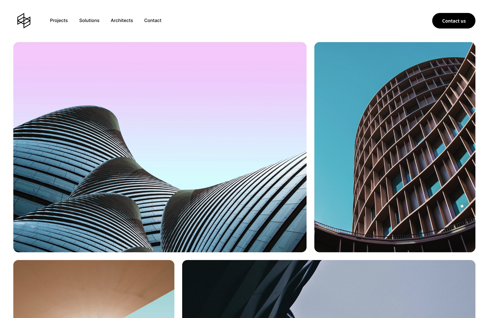
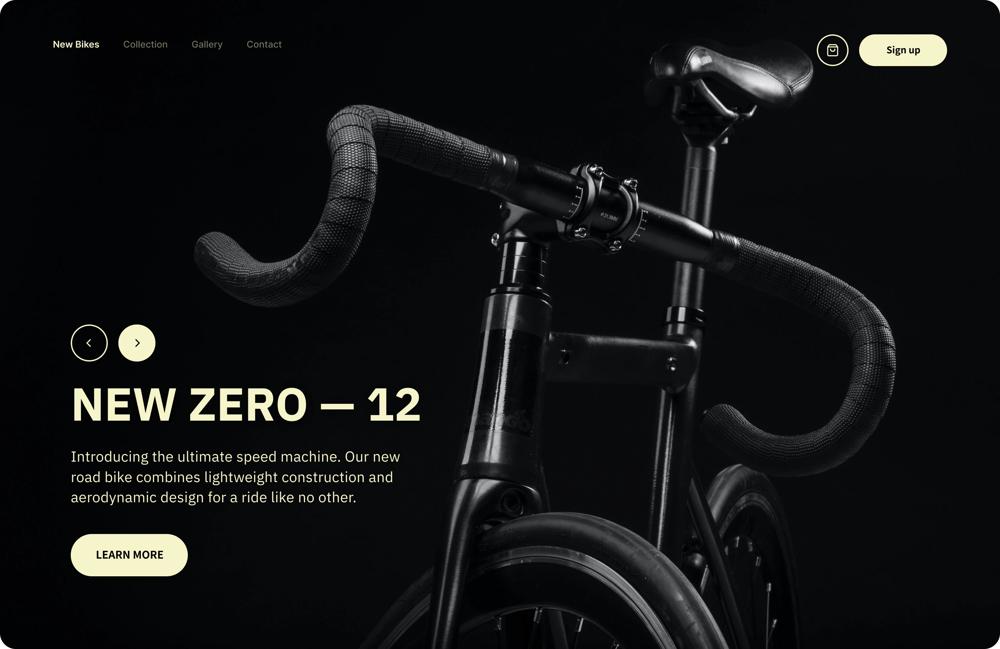
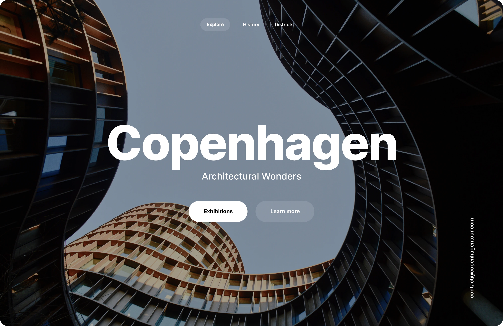

Hello — I'm Dan.
A New York-based
Product Designer.
I design digital products combining a user-centered
approach aligned with a solid product strategy.

Modular Arch
Excitingly collaborating with architects and designers on this architecture studio project as a UX
designer. Our user-centered designs transform spaces and enhance the human experience with innovative
solutions.
Role
Product Designer
Project
Website Redesign
Year
2022 - 2023
01

Zero Bikes
As a UX designer, I designed a landing page for ZERO BIKES' new model, ZERO-12. The goal was to showcase
the bike's features and increase sales.
Role
Product Designer
Project
App Redesign
Year
2022 - 2023
02

Copenhagen
This project focused on the city of Copenhagen and aimed to improve the website's usability issues, while
also introducing a seamless checkout workflow to increase conversion rates.
Role
Product Designer
Project
App Redesign
Year
2022 - 2023
03